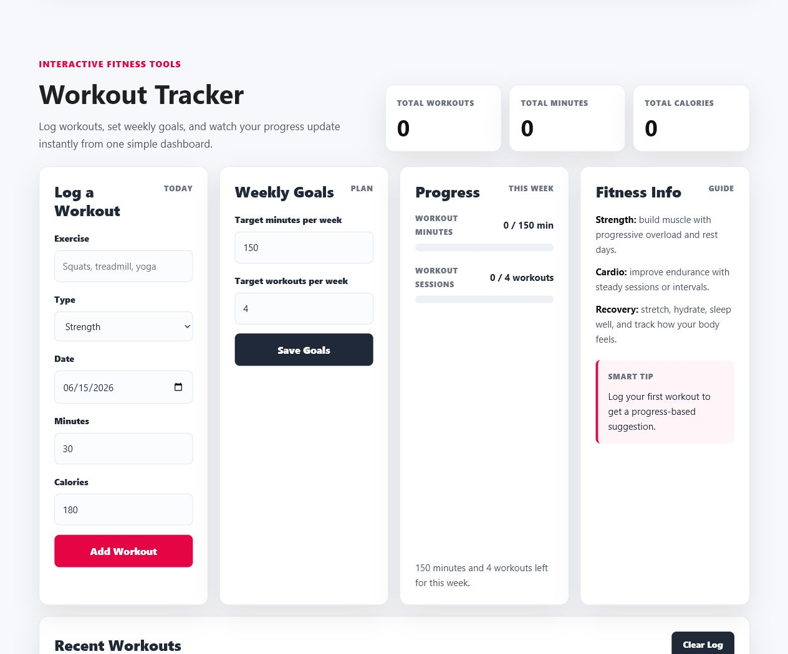

JavaScript · Workout tracking
FitNex
Log workouts, set weekly goals, and review progress stored in the browser.
HTML · CSS · JavaScript · Bootstrap
- Log a workout
- Set a weekly goal
- Track your progress

Workout tracking
Log an exercise, its duration, and calories, then review session totals and weekly goals. JavaScript updates the dashboard as entries change.
Browser storage
Workouts and goals save in localStorage. They stay in the current browser and do not sync across devices. Account screens simulate a member flow locally.